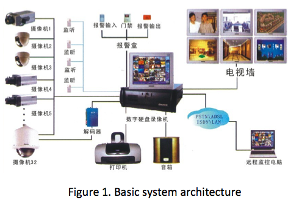

Golden Eye Technology developed the first PC-based DVR (Digital Video Recorder) in China in 1997 and successfully used in digital video surveillance system. I joined Golden Eye Technology in November 2002 as a Software Engineer (C++ Programmer) in a software development team. My task is software maintenance, as well as some improving development.
[ Golden Eye Technology | GoldenEye ]
GoldenEye: A digital video surveillance system (for safeguarding)

About the product
From the middle of 1990s, digital video surveillance system was used in safeguarding applications to upgrade previous CCTV (Closed-circuit Television) system. GoldenEye digital video surveillance system was one of the first products that dominated Chinese market. GoldenEye is a PC-based system that makes it very easy to evolve with the needs of market and the progress of technology.
Early versions of GoldenEye system worked in a local mode. The system core is DVR (Digital Video Recorder). Multiple videos are connected into local surveillance center via cables, captured and compressed with DVR, then recorded into disk files. Usually, the surveillance center equipped with a video monitors array (or display wall). The system provides interface to control the displaying and recording of the videos. In addition, the system may integrate functions like alarms I/O, video motion or audio silence detection, timing actions, or actions driven by events.
The broad-band networks were widely deployed from the last of 1990s, which together with the advancing of digital video compression techniques, made it possible to transmit multiple videos over networks. Functions like remote video surveillance were introduced into digital video surveillance system. The video compressed with MPEG-1 or H.261/263 standards can be transmitted from local surveillance center to remote users in the form of stream media. The users may watch one to four videos remotely over Intranet, even Internet.
The rapid growth of Internet band-width and high-efficient video compress standards like MPEG-4 and H.264 make it possible to transmit high-quality videos over Internet. To support larger scale video surveillance, the surveillance center of the new system is not set on local any more. Videos in a large geographical range are captured and compressed locally, then transmitted to the surveillance center over network (or Internet). The videos are recorded into disk files or decompressed and displayed on monitors. This kind of video surveillance system is named NVR (Network Video Recorder).
Major Contributions:
Title: Software Engineer (C++ Programmer)
- Develop a browser-based remote video surveillance client to make the system works in a B/S fashion.
- Develop an ActiveX control as a wrapper of remote video surveillance client. Interface design and coding.
- Develop a hook interface for the software to facilitate integration with sibling applications or management system. Interface design and coding.
- Develop many enhancement modules to add new functions or support new hardware (or communication protocols). Design of functional flows and coding.
- Debug software driven by testing reports.
Summary of Techniques
| Languages: | C++ |
|---|---|
| Operating systems: | Windows NT/2000/XP |
| Edit, compile, and debug: | Visual C++ 6.0 |
| Libraries: | STL, MFC, Win32 API, Winsock, DirectX/DirectShow |
| Image and video: | DivX/Xvid, OpenCV |
| Techniques: | TCP/UDP, Socket, Thread, ActiveX, GUI, OOD/OOP |